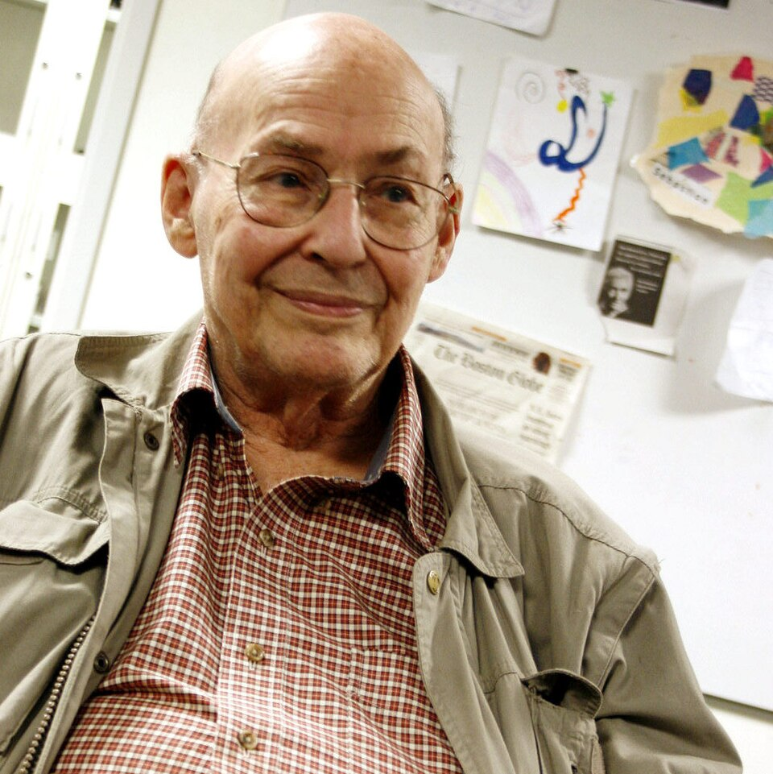

AI CHRONICLE · 02
SCENE 7 · 1951 · 1955 — 첫 기계가 ‘배우고’ ‘추론’합니다
1951 · 1955
Minsky · Newell · SimonSNARC, 그리고 Logic Theorist
기계는 학습했고,
이어서 추론했습니다.

1951 · MINSKY
23살의 Marvin Minsky가 SNARC를 만듭니다 — 진공관 3,000개·시계 부품으로 이루어진 40개 ‘뉴런’. 미로를 빠져나오는 쥐를 흉내내며 시냅스 강도가 변합니다 — 첫 신경망 학습 기계.

1955 · NEWELL & SIMON
Allen Newell과 Herbert Simon이 RAND에서 Logic Theorist를 작성합니다. Russell·Whitehead의 『Principia』 정리 38개를 스스로 증명 — 그중 한 증명은 원본보다 우아했습니다.
두 가지 길
Minsky의 SNARC는 신경망(connectionism)의 첫 시연. Newell·Simon의 Logic Theorist는 기호주의(symbolic AI)의 첫 시연. 같은 시기에 갈라진 두 길 — 60년 동안 다투다 2010년대에야 한 길로 모입니다.
SCENE
SNARC 부품: 폭격기 자동조준기 부품 + B-24 프로펠러의 회전 축.
DETAIL
Simon은 1956년 강의에서 — “10년 안에 컴퓨터가 체스 챔피언을 이길 것”이라 장담. 실제로는 41년 걸렸습니다.
ECHO
두 길의 끝 — LLM + tool use가 결국 둘 다입니다.